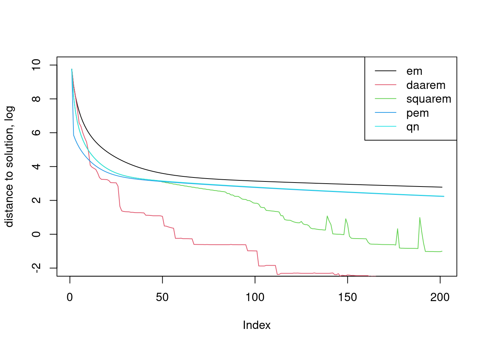

Last updated: 2022-12-27
Checks: 7 0
Knit directory: fastEM/analysis/
This reproducible R Markdown analysis was created with workflowr (version 1.7.0). The Checks tab describes the reproducibility checks that were applied when the results were created. The Past versions tab lists the development history.
Great! Since the R Markdown file has been committed to the Git repository, you know the exact version of the code that produced these results.
Great job! The global environment was empty. Objects defined in the global environment can affect the analysis in your R Markdown file in unknown ways. For reproduciblity it’s best to always run the code in an empty environment.
The command set.seed(1) was run prior to running the
code in the R Markdown file. Setting a seed ensures that any results
that rely on randomness, e.g. subsampling or permutations, are
reproducible.
Great job! Recording the operating system, R version, and package versions is critical for reproducibility.
Nice! There were no cached chunks for this analysis, so you can be confident that you successfully produced the results during this run.
Great job! Using relative paths to the files within your workflowr project makes it easier to run your code on other machines.
Great! You are using Git for version control. Tracking code development and connecting the code version to the results is critical for reproducibility.
The results in this page were generated with repository version 158d563. See the Past versions tab to see a history of the changes made to the R Markdown and HTML files.
Note that you need to be careful to ensure that all relevant files for
the analysis have been committed to Git prior to generating the results
(you can use wflow_publish or
wflow_git_commit). workflowr only checks the R Markdown
file, but you know if there are other scripts or data files that it
depends on. Below is the status of the Git repository when the results
were generated:
Ignored files:
Ignored: .Rproj.user/
Untracked files:
Untracked: .gitignore
Untracked: analysis/fastEM_regression.Rmd
Unstaged changes:
Modified: analysis/index.Rmd
Modified: code/mixem.R
Modified: code/mr_ash.R
Note that any generated files, e.g. HTML, png, CSS, etc., are not included in this status report because it is ok for generated content to have uncommitted changes.
These are the previous versions of the repository in which changes were
made to the R Markdown (analysis/fastEM_GMM.Rmd) and HTML
(docs/fastEM_GMM.html) files. If you’ve configured a remote
Git repository (see ?wflow_git_remote), click on the
hyperlinks in the table below to view the files as they were in that
past version.
| File | Version | Author | Date | Message |
|---|---|---|---|---|
| Rmd | 158d563 | DongyueXie | 2022-12-27 | wflow_publish("fastEM_GMM.Rmd") |
Compare daarem,squarem,qusi-newton,pem.
Load some packages and function definitions used in the example below.
library(ggplot2)
library(cowplot)
library(daarem)
library(turboEM)
source("../code/misc.R")
source("../code/mixem.R")Load the 100,000 x 100 conditional likelihood matrix computed from a simulated data set.
load("../data/mixdata.RData")
n <- nrow(L)
m <- ncol(L)
cat(sprintf("Loaded %d x %d data matrix.\n",n,m))Loaded 100000 x 10 data matrix.Set the initial estimate of the mixture proportions.
x0 <- rep(1/m,m)out <- system.time(fit1 <- mixem(L,x0,numiter = 200))
f1 <- mixobjective(L,fit1$x)
cat(sprintf("Computation took %0.2f seconds.\n",out["elapsed"]))Computation took 9.70 seconds.cat(sprintf("Log-likelihood at EM estimate is %0.12f.\n",f1))Log-likelihood at EM estimate is -59912.068371303452.out <- system.time(fit2 <- mixdaarem(L,x0,numiter = 200))
f2 <- mixobjective(L,fit2$x)
cat(sprintf("Computation took %0.2f seconds.\n",out["elapsed"]))
cat(sprintf("Objective value at DAAREM estimate is %0.12f.\n",f2))The maxiter in daarem and turboem seems to have different meanings. THe former one is the number of evaluations of fixptfn, the latter is not.
out <- system.time(daarem_res <- daarem(x0,fixptfn=mixdaarem.update,objfn=mixdaarem.objective,L=L,e=1e-15,
control = list(maxiter=200,order=10,tol=1e-8,convtype='objfn')))Warning in daarem(x0, fixptfn = mixdaarem.update, objfn = mixdaarem.objective, :
Algorithm did not convergecat(sprintf("DAAREM took %0.2f seconds.\n",out["elapsed"]))DAAREM took 9.44 seconds.cat(sprintf("DAAREM obj is %0.12f.\n",daarem_res$value.objfn))DAAREM obj is -59895.963251855057.res = turboem(x0,fixptfn=mixdaarem.update,objfn=mixdaarem.objective,L=L,e=1e-15,method=c("squarem","pem","qn"),
control.run = list(maxiter=200,convtype='objfn',keep.objfval=TRUE,tol=1e-8))Warning in accelerate(par = par, fixptfn = fixptfn, objfn = objfn, boundary
= boundary, : If the parameter space is constrained, then pconstr should be
provided for method='qn'res method value.objfn itr fpeval objfeval convergence elapsed.time
1 squarem -59896.27 200 399 277 FALSE 21.919
2 pem -59905.22 200 410 401 FALSE 18.093
3 qn -59905.39 200 204 401 FALSE 17.820f <- mixobjective(L,x)
plot(log(f-fit1$value),type='l',ylim=c(-2,10),ylab='distance to solution, log')
lines(log(f-daarem_res$objfn.track),col=2)
lines(log(f-res$trace.objfval[[1]]$trace),col=3)
lines(log(f-c(mixobjective(L,x0),res$trace.objfval[[2]]$trace)),col=4)
lines(log(f-c(mixobjective(L,x0),res$trace.objfval[[3]]$trace)),col=5)
legend('topright',c('em','daarem','squarem','pem','qn'),lty=c(1,1,1,1,1),col=1:5)
sessionInfo()R version 4.2.2 Patched (2022-11-10 r83330)
Platform: x86_64-pc-linux-gnu (64-bit)
Running under: Ubuntu 22.04.1 LTS
Matrix products: default
BLAS: /usr/lib/x86_64-linux-gnu/openblas-pthread/libblas.so.3
LAPACK: /usr/lib/x86_64-linux-gnu/openblas-pthread/libopenblasp-r0.3.20.so
locale:
[1] LC_CTYPE=en_US.UTF-8 LC_NUMERIC=C
[3] LC_TIME=en_US.UTF-8 LC_COLLATE=en_US.UTF-8
[5] LC_MONETARY=en_US.UTF-8 LC_MESSAGES=en_US.UTF-8
[7] LC_PAPER=en_US.UTF-8 LC_NAME=C
[9] LC_ADDRESS=C LC_TELEPHONE=C
[11] LC_MEASUREMENT=en_US.UTF-8 LC_IDENTIFICATION=C
attached base packages:
[1] parallel stats graphics grDevices utils datasets methods
[8] base
other attached packages:
[1] turboEM_2021.1 quantreg_5.94 SparseM_1.81
[4] numDeriv_2016.8-1.1 doParallel_1.0.17 iterators_1.0.14
[7] foreach_1.5.2 daarem_0.7 cowplot_1.1.1
[10] ggplot2_3.4.0
loaded via a namespace (and not attached):
[1] tidyselect_1.2.0 xfun_0.35 bslib_0.4.2 splines_4.2.2
[5] lattice_0.20-45 colorspace_2.0-3 vctrs_0.5.1 generics_0.1.3
[9] htmltools_0.5.4 yaml_2.3.6 survival_3.4-0 utf8_1.2.2
[13] rlang_1.0.6 jquerylib_0.1.4 later_1.3.0 pillar_1.8.1
[17] glue_1.6.2 withr_2.5.0 lifecycle_1.0.3 stringr_1.5.0
[21] MatrixModels_0.5-1 munsell_0.5.0 gtable_0.3.1 workflowr_1.7.0
[25] codetools_0.2-18 evaluate_0.19 knitr_1.41 fastmap_1.1.0
[29] httpuv_1.6.7 fansi_1.0.3 highr_0.9 Rcpp_1.0.9
[33] promises_1.2.0.1 scales_1.2.1 cachem_1.0.6 jsonlite_1.8.4
[37] fs_1.5.2 digest_0.6.31 stringi_1.7.8 dplyr_1.0.10
[41] grid_4.2.2 rprojroot_2.0.3 cli_3.4.1 tools_4.2.2
[45] magrittr_2.0.3 sass_0.4.4 tibble_3.1.8 whisker_0.4.1
[49] pkgconfig_2.0.3 MASS_7.3-58.1 Matrix_1.5-3 rmarkdown_2.19
[53] rstudioapi_0.14 R6_2.5.1 git2r_0.30.1 compiler_4.2.2